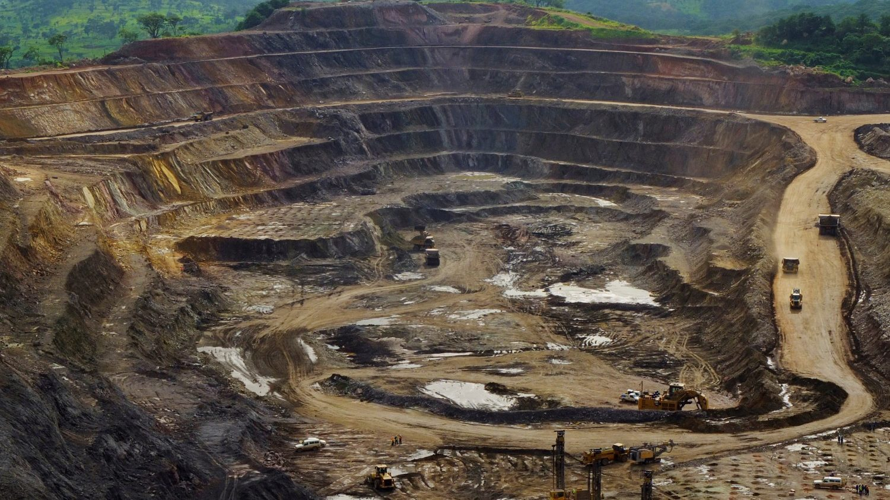
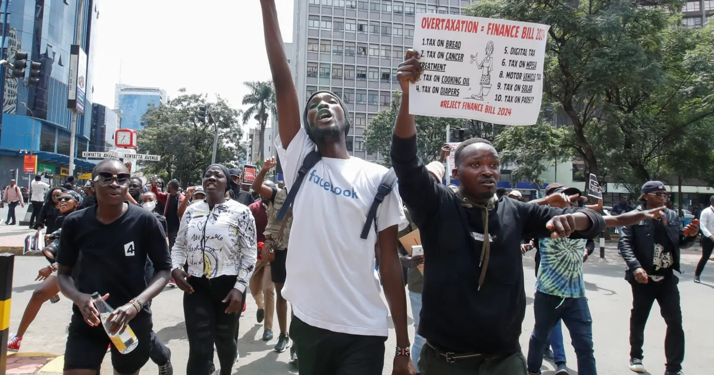
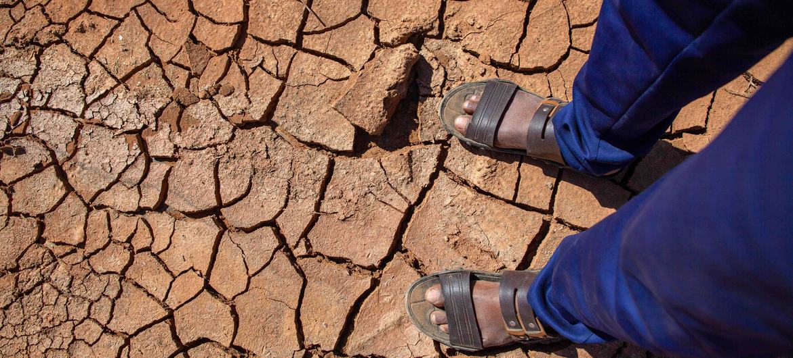

RESOURCE EXPLOITATION
Some 20,000 people work at Shabara artisanal mine in the DRC, in shifts of 5,000 at a time. The DRC produced approximately 74% of the world's cobalt in 2021.
Junior Kannah/AFP via Getty Images
Africa is a resource rich continent that many capitalist seek to exploit with no care for the consequences on the environment and the people native to the land causing scarcity of resources. Along with this comes labor exploitation or modern day slave labor to gather these resources.
An example of this is the destruction of the Democratic Republic of Congo (DRC). The DRC is abundant in resources and mineral deposits but despite that is one of the poorest countries in the world. Over 73% percent of DRC citizens live under the poverty line. Millions of people are displaced because of Armed conflicts, insecurity, and extreme weather conditions. Majority of these issues are caused by the extreme mining industry in Congo. The mining of cobalt, lithium, nickel, and etc, to make technological products like phones, vapes, electrical vehicles, green technology, and etc contributes to the deforestation and exploitation of both the land and people. The destructive process of sourcing resources causes forced displacement by destroying the land and homes that was there disregarding the natives.

Excavators and drillers at work in an open pit at the Tenke Fungurume copper and cobalt mine in Congo in January 2013. Photo: Reuters
CORRUPT GOVERNANCE
Sudan's security forces aboard a utility vehicle. Photo: AFP
Repressive governance is a major cause of displacement. Corrupt African officials utilize the militia power to protect themselves and oppressive their citizens. Only caring for their own interests rather than the people. This corruption brings higher crime rates and violent extremist groups.
The corruption of protectors like police and judiciary causes citizens to believe they can't rely on anyone for protection which causes vulnerability and insecurity.
Majority of these corrupt African leaders are put in to position by Western powers that encourage the demise of Africa. These African leaders only care for themselves and pocketing as much as possible.
An example of this is the Nigerian President who notoriously known for dishonorable and questionable background. He keeps himself feed and leaves his people hungry. Anytime anyone questions movements he removes them to keep his position secured.
ECONOMIC FACTORS
A riot police officer stands near supporters of Kenya's opposition leader Raila Odinga of the Azimio La Umoja (Declaration of Unity) One Kenya Alliance, during an anti-government protest against the imposition of tax hikes by the government, in Mathare settlement in Nairobi, Kenya, July 12, 2023. REUTERS/John Muchucha/File Photo
Many Africans are displaced due to socioeconomic issues within their country. Fleeing their homes to look for better opportunities in other countries, from a lack of governmental support.
Recently Kenya's government had started over-taxing their citizens despite them barely earning much. Putting pressure on Kenyan business. Many people have already migrated to Kenya for employment but the high taxes had ruined. In response the people protested which in return made it hard for people to run their businesses.

Protesters angered by the new finance bill have been trying to make their way to parliament
ENVIROMENTAL PRESSURES
A rural herder stands by one of her dead goats on scorched land in a small village located outside Doolow, Somalia, on Oct. 17,2022. Photo: Giles Clarke/UNOCHA via Getty Images
It is no surprise the earth is burning. But the global south is facing majority of the repercussions especially Africa. Majority of the countries near the equator are heavily affected by droughts, natural disasters, rising temperatures, flooding, and landslides displacing so many people every year. This also effects agriculture, livestock, water, and other natural resources that make up the livelihood of so may people.
The droughts in Somalia for example, continues to worsen each year leaving more and more Somalis in displacement. The drought causes food insecurity and the depletion in water sources affects the crop and animals . Somalia's limited rainfall leaves people with nothing but malnourished children. Because of all this the already bad poverty crisis continues to worsen leading many to death.

More than 40 per cent of the world's arable land has been affected by the expansion of arid zones. The UN predicts that this expansion will cost the world 20 million tonnes of maize, 21 million tonnes of wheat, and 19 million tonnes of rice. Pictured: Former farmland in Somalia